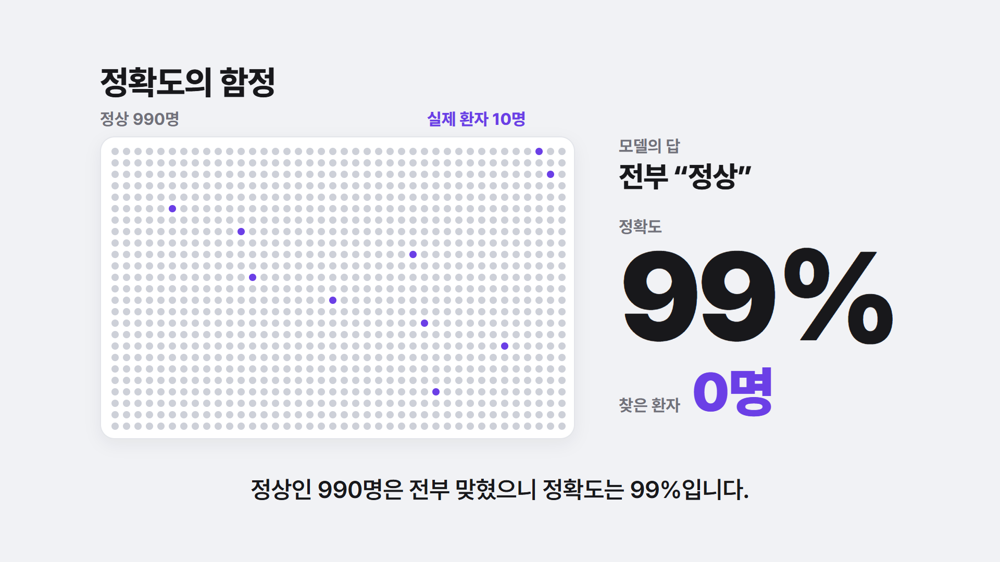
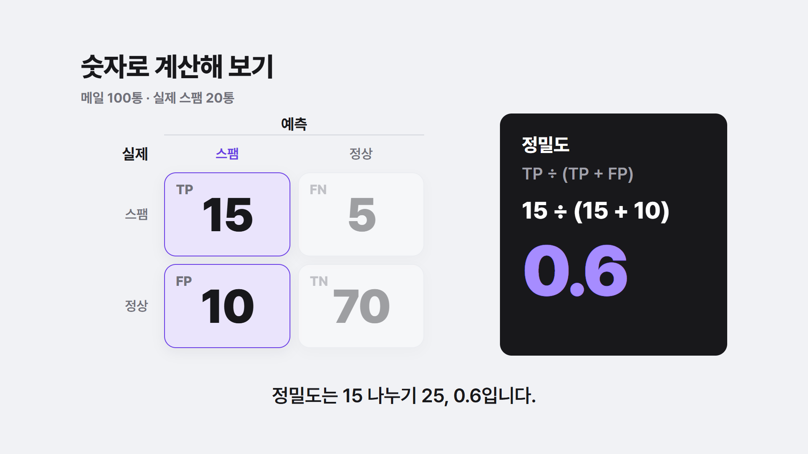
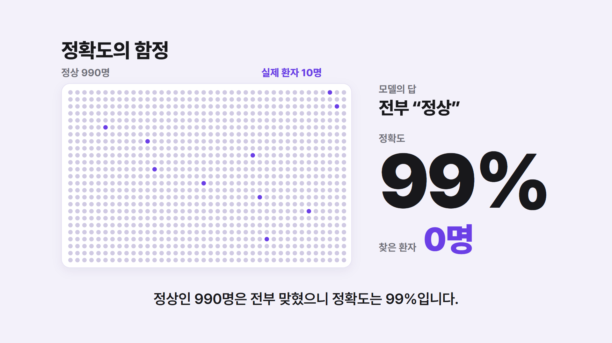
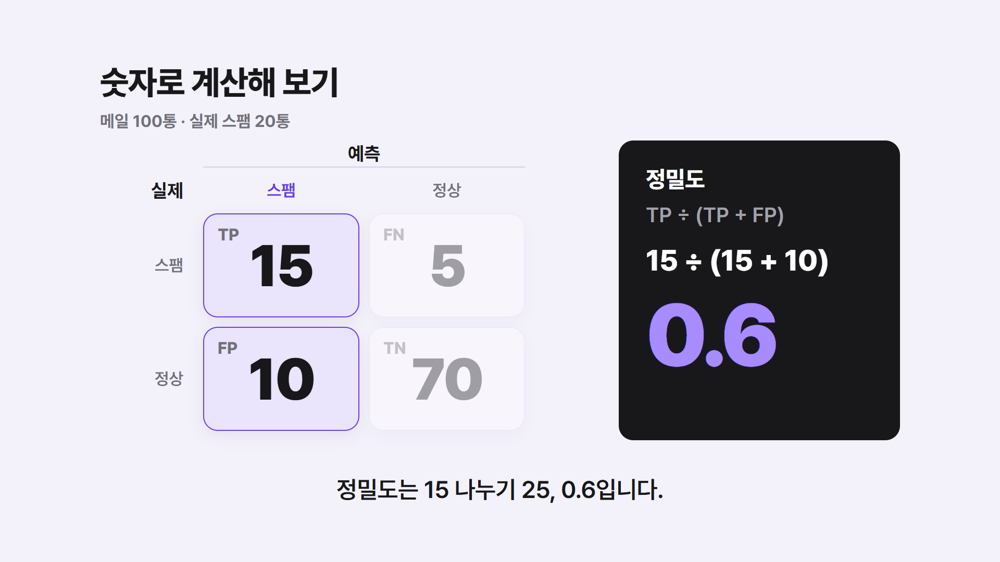
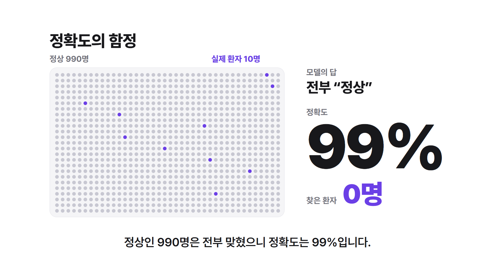
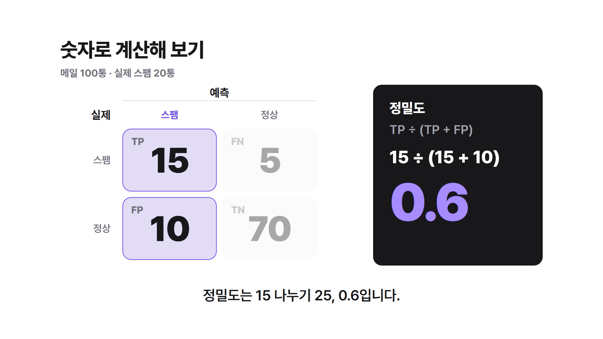

배경 비교 — 강조색 바이올렛
따뜻한 아이보리를 빼고 차가운 쪽 배경 3가지로 찍었습니다. 카드 테두리·점 색·그림자도 배경에 맞춰 같이 바꿨습니다. 어두운 수식 카드 위 숫자는 잘 보이도록 밝은 보라를 씁니다.
가. 연회색 + 흰 카드
가장 깔끔하고 중립적입니다. 흰 카드가 살짝 떠 보입니다.


나. 연보라 + 흰 카드
바이올렛과 한 식구처럼 묶여 채널 색이 분명해집니다. 대신 화면 전체가 보랏빛을 띱니다.


다. 흰 바탕 + 옅은 회색 카드
가장 밝고 시원합니다. 카드에 그림자가 없어 납작하고, 흐려진 칸은 거의 사라져 보입니다.

